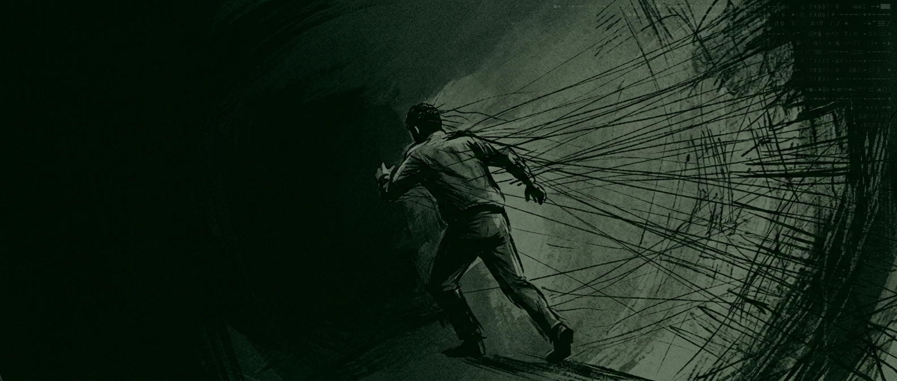
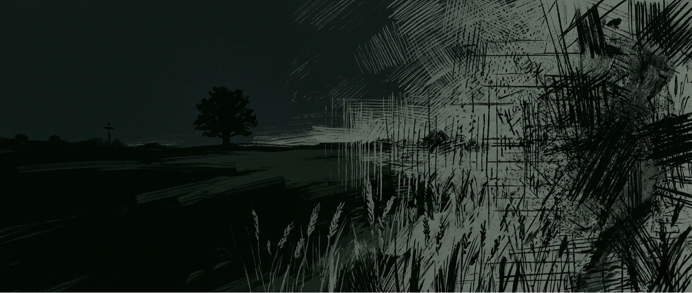

Tau nereikia daugiau informacijos.
Tau tereikia išgirsti save.
Nuolatinis kažko ieškojimas, pastovus permąstymas, nerimas, apatija ar šiaip pasimetimo jausmas…
Pažįstama?
1:1 diagnostinė sesija — žingsnis aiškumo link.
Rezervuoti laiką1:1 su med. gyd. ⚕ Vietų skaičius ribotas
Kai „ant popieriaus“ viskas gerai…
Bet iš tikrųjų nieko gero
Tu žinai, ką „reikėtų“ daryti — turbūt skaitei saviugdos knygas, žiūrėjai video YouTube, gal net buvai pas psichologą. Bet vis tiek jauti, kad kažkas ne taip. Galbūt net pradedi abejoti, ar išvis kada nors bus kitaip.

Naujas amžius, kuriame tavo dėmesys nepriklauso tau
Gyvename sistemoje, kuri nebuvo sukurta aiškumui.
Ji buvo sukurta greičiui, stimuliacijai ir reakcijoms išgauti.
Telefonas pypsi 80 kartų per dieną. Naujienos sukonstruotos taip, kad sukeltų pyktį ir baimę. Kiekviena programėlė optimizuota vienam tikslui — laikyti tavo dėmesį nuolatinėje tylios įtampos būsenoje.
Dienos pabaigoje tavo smegenys apdoroja daugiau informacijos, nei tavo proseneliams tekdavo per mėnesį.

Tai nėra sąmokslas. Niekas to neplanavo (greičiausiai).
Bet galiausiai — koks skirtumas, nes tai vis tiek stumia tave tiksliai priešinga kryptimi nuo to vienintelio dalyko, kuris gali iš tikrųjų padėti.

Lukas K., M.D.
Medicinos Gydytojas
Lietuva – Šveicarija
To „dalyko“ buvau priverstas ieškoti ir aš — leisk paaiškinti.
Mane visada žavėjo žmogaus kūno ir proto vientisas veikimas. Tikriausiai tas smalsumas ir atvedė į mediciną. Intensyvus darbo, studijų ir vidinių paieškų maratonas nuvedė mane ten, kur nereikėjo eiti.
Ir tada buvau išbandytas pats.
Visa tai baigėsi perdegimu, panikos atakomis ir vidine krize, kurios niekada anksčiau nebuvau patyręs.
Mano susidomėjimas ir paieškos nustojo būti teorinės. Rasti atsakymus tapo būtinybe.
Skaičiau knygas, žiūrėjau video medžiagą, mėginau terapiją, kvėpavimo technikas, meditaciją, neuromokslą, NLP, alternatyvias praktikas… Viską pirmiausia išbandžiau ant savęs. Ne todėl, kad norėjau sukurti kažkokį metodą — tiesiog neturėjau kito pasirinkimo.
Po ilgų „eksperimentų“ pagaliau radau tai, kas veikė man, ir tai tik dar labiau paskatino norą gilintis toliau. Turėjau galimybę dirbti psichiatrijos srityje vienoje didžiausių klinikų Šveicarijoje, dalyvauti Miuncheno kognityvinės elgesio terapijos kursuose, pravesti daugiau nei 600 individualių sesijų.
Bet svarbiausia, ką supratau per tuos metus: tai ne technika ar metodas.
O tai, kad žmogus negali pamatyti savęs iš šono.
Tam reikia veidrodžio. Bet ne bet kokio.
Reikia tokio, kuris atspindi ne tai, ką nori išgirsti, o tai, ko pats nematai. Kuris neteisia ir neverčia — bet ir nenuolaidžiauja. Kuris sukuria saugią erdvę ir leidžia būti visiškai atviru.
Ir svarbiausia — priima ir puoselėja tą naują tavęs versiją, kol pasaulis dar nespėjo jos sutrypti.
Viskas prasideda nuo
vieno pokalbio.
Rezervuoti laiką1:1 su med. gyd. ⚕ Vietų skaičius ribotas
Ką žmonės patiria.
„Beveik metus sukausi ratais dėl vieno sprendimo dėl karjeros. Pliusų-minusų sąrašai, pokalbiai su draugais, nemiga trečią nakties, galvoje vis tie patys scenarijai. Sesijoje paaiškėjo, kad pats sprendimas niekada ir nebuvo problema, aš tiesiog vengiau to, ką jis reiškė apie mane. Kai tai „išlindo į dienos šviesą“, atsakymas irgi tapo labai aiškus. Gėdingai akivaizdus, jei atvirai.”
Tomas, 34 · Vilnius„Trejus metus gyvenau su tokiu tyliu foniniu nerimu, kurio negalėjau niekam paaiškinti. Net ne panikos priepuoliai, nieko dramatiško, tiesiog nuolatinis zyzimas, dėl kurio viskas buvo sunkiau, nei turėtų būti. Per darbo procesą pavyko atsekti jį iki konkrečios priežasties. Jis nedingo per naktį, bet pirmą kartą tiksliai žinojau, su kuo turiu reikalą.”
Ieva, 21 · Kaunas„Vis kartojosi tas pats. Kitas darbas, kiti santykiai, bet viskas apie tą patį. Galvojau, kad tiesiog toks esu. Pasirodė, kad tai ne charakteris, o konkretus elgesio ir mąstymo šablonas. Dabar jį pagaunu dar sakinio viduryje.”
Marius, 42 · Klaipėda„Net nesupratau, koks jis sunkus, kol jo nebebuvo. Tiesiog buvau pripratusi — tas suspaudimas, nuovargis, jausmas, kad kažkas ne taip. Tik kai pagaliau leidau sau jaustis „normaliai“, supratau, kokį svorį nešiojau.”
Greta, 31 · ŠiauliaiKaip tai veikia
Prieš nuotolinį video susitikimą užpildysi diagnostinį klausimyną — struktūruotą anketą, kuri leis pokalbiui būti tikslingu.
Pokalbio trukmė apie 1 val. Formatas diagnostinis: bus klausiama, klausomasi, ir kartu dedami taškai ant i.
Pabaigoje jausi daugiau aiškumo — apie situaciją, kas tau svarbu, ir tolimesnę kryptį.
Dažniausiai užduodami klausimai
Kaip sesija vyksta praktiškai?
Pirmiausiai po rezervacijos el. paštu gausi struktūruotą diagnostinį klausimyną. Jis padės suformuluoti, kas vyksta, ir leis pačiai sesijai būti produktyvesnei. Tuomet prisijungsi video skambučiui naudodamas nuorodą rezervuotu laiku.
Kas vyksta po sesijos?
Už šios pirmos sesijos egzistuoja struktūruotas, 8–12 savaičių procesas, skirtas gilesniam pokyčiui. Bet jo reikia ne visiems. Pirmoji sesija duoda daugiau aiškumo pati savaime — daug žmonių išeina gavę tai, ko jiems reikėjo. Jei jausi, kad nori judėti toliau — aptarsime.
Kodėl sesija kainuoja €57?
Kaina yra sąmoningai nustatyta ties arba žemiau rinkos vidurkio standartinei terapijos sesijai, nes didžiausia kliūtis tikram pokyčiui dažniausiai yra pats pirmasis žingsnis.
Ar man reikės kažkur atvykti?
Ne - pirma sesija vyksta nuotoliniu būdu per video skambutį. Nuorodą ir visą informaciją gausi po rezervacijos.
Ar viskas lieka konfidencialu?
Be jokių išlygų. Viskas, kas aptariama sesijoje, lieka jos ribose. Jokių įrašų, jokių dalijamų užrašų, jokių trečių šalių.